Comunicación Analógica
Página Web
Señales analógicas
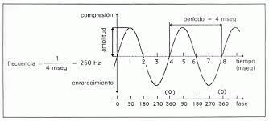
Son las que contienen infinitos valores en cualquier momento del tiempo y que se desarrollan de manera constante, por ejemplo, la temperatura, la intensidad de la luz o el timbre de la voz. Los sistemas de comunicación analógicos son competentes para transportar señales inteligentes que presentan servicios de voz, imágenes, textos y datos.
1.2.1 Elementos de una sistema de comunicaciones ( Definiciones de cada uno )
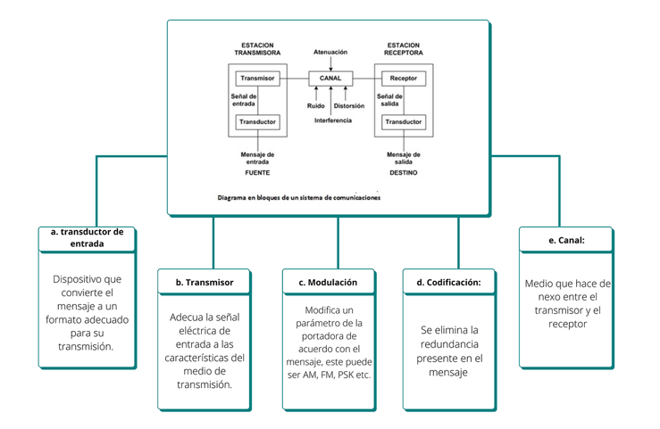
1.3 Diferencias entre la comunicación analógica y digital

1.4 Ejemplos
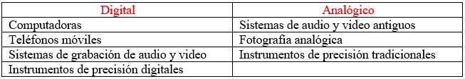
1.5 Modelo de Red
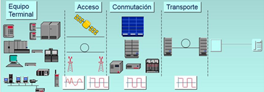
a. Equipo Terminal. - Situado en las instalaciones del cliente para aprovechar un servicio
de telecomunicaciones.
b. Acceso. - La forma de conectar las instalaciones del cliente con las de la empresa proveedora del servicio
c. Conmutación. - Los equipos responsables de establecer la comunicación entre los clientes.
d. Transporte. - La forma de conectar a los elementos de conmutación entre sí
b. Acceso. - La forma de conectar las instalaciones del cliente con las de la empresa proveedora del servicio
c. Conmutación. - Los equipos responsables de establecer la comunicación entre los clientes.
d. Transporte. - La forma de conectar a los elementos de conmutación entre sí
1.6 Espectro Electromagnético ( rango de frecuencia )
Distribución energética del conjunto de las ondas electromagnéticas. Referido a un objeto se denomina espectro electromagnético o simplemente espectro a la radiación electromagnética que emite (espectro de emisión) o absorbe (espectro de absorción) una sustancia. Dicha radiación sirve para identificar la sustancia de manera análoga a una huella dactilar. Los espectros se pueden observar mediante espectroscopios que, además de permitir ver el espectro, permiten realizar medidas sobre el mismo, como son la longitud de onda, la frecuencia y la intensidad de la radiación.[1]
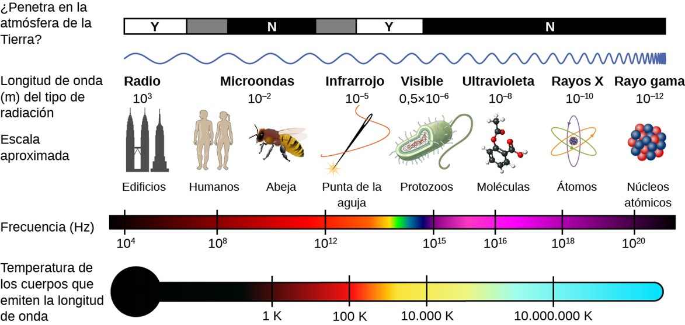
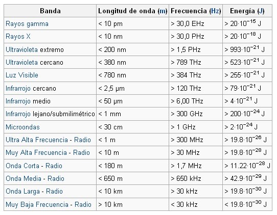
1.7 Efectos de radiación en el cuerpo humano
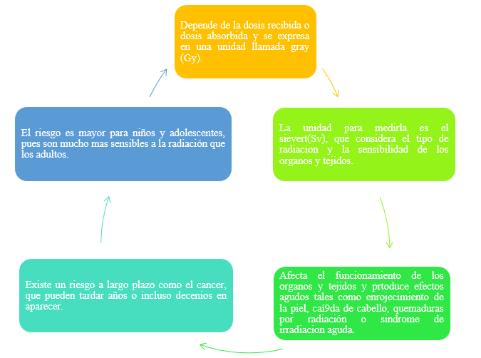
1.8 Modulación
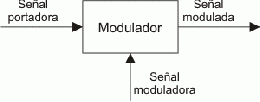
Consiste en variar determinado aspecto de una señal denominada portadora con respecto a una segunda señal denominada señal moduladora, generando finalmente una “señal u onda modulada”.En el proceso de modulación, la señal de alta frecuencia (portadora) quedará modificada en alguno de sus parámetros como su amplitud, frecuencia, fase, etc. de manera proporcional a la amplitud de la señal de baja frecuencia o moduladora.
Amplitud Modulada. (AM). En la modulación de amplitud (AM) la característica sometida a variación es la amplitud de la onda. Por tanto esta se define como el proceso mediante el cual se varía la amplitud de la onda portadora de radiofrecuencia (RF) en función de la variación de la amplitud de la señal de audiofrecuencia (AF)[1].
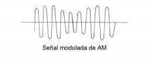
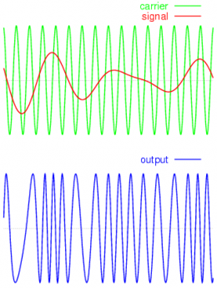
Modulación de Frecuencia. Se refiere a la forma de transmitir Información a través de una Onda portadora variando su frecuencia. En este tipo de modulación la variación se produce en los saltos de frecuencias.
Las características principales de la frecuencia modulada son: Su modulación y su propagación por ondas directas como consecuencia de su ubicación en la banda de frecuencia de VHF, en ella se crean bandas laterales cuya extensión dependerá de la amplitud de la onda moduladora, estas bandas laterales hacen que el ancho de banda que se utiliza en esta modulación es más grande que el tradicional de la onda media.
Modulación de fase (PM). Es un proceso donde el parámetro de la señal portadora que variará de acuerdo a señal moduladora es la fase, manteniendo la frecuencia y la amplitud constante, es un tipo de modulación exponencial al igual que la modulación de frecuencia[1].

1.9 TDM _ FDM
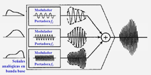
FDM es una técnica analógica que se puede aplicar cuando el BW de un enlace es mayor que los BW combinados de las señales a transmitir.Cada fuente genera una señal con un rango de frecuencia similar. Dentro del MUX, estas señales similares se modulan sobre distintas frecuencias portadoras (f1, f2 y f3).
Proceso de multiplexación
El DEMUX usa filtros para descomponer la señal multiplexada en las señales componentes que la constituyen. Las señales individuales se pasan después a un demodulador que las separa de sus portadoras y las pasa a líneas de salida.
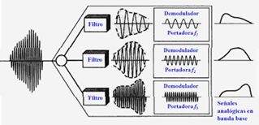
FDM en el dominio de la frecuencia
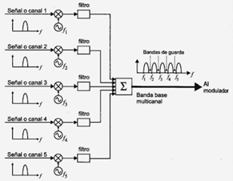
Se puede considerar a FDM como una técnica de multiplexación analógica; sin embargo, esto no significa que FDM no se pueda utilizar para combinar fuentes que envían señales digitales. Una señal digital se puede convertir a una señal analógica antes de que FDM se utilice para multiplexarlas.
TDM
("Time División Múltiple Access") es común en los sistemas de telefonía fija. Las últimas tecnologías en los sistemas de radio son la codificación de la voz y la compresión de datos, que eliminan redundancia y periodos de silencio y decrementan el tiempo necesario en representar un periodo de voz. Los usuarios acceden a un canal de acuerdo con un esquema temporal. Aunque no hay ningún requerimiento técnico para ello, los sistemas celulares, que emplean técnicas TDMA, siempre usan TDMA sobre una estructura FDMA. Un sistema puro TDMA tendría sólo una frecuencia de operación, y no sería un sistema útil. TDMA es un concepto bastante antiguo en los sistemas de radio.
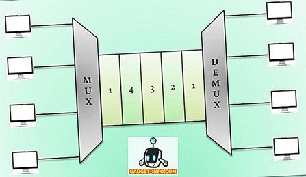
1.10 Acoplamiento de impedancia
El acople de impedancias es necesario en el diseño de circuitos de RF para obtener la máxima transferencia de potencia entre la fuente y la carga.
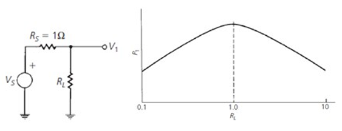
Máxima transferencia de potencia en AC
La MTP ocurre cuando la impedancia de carga ZL es igual al conjugado complejo de la impedancia de la fuente Zs.𝑍 𝑆 =𝑅+𝑗𝑋 𝑍 𝐿 =𝑅−𝑗𝑋
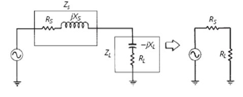
1.11 Capacidad de información
>Las dos limitaciones más importantes en el funcionamiento de un sistema de comunicaciones son el ruido y el ancho de banda. El ruido se describirá más adelante en este capítulo. El ancho de banda de una señal de información no es más que la diferencia entre las frecuencias máxima y mínima contenidas en la información, y el ancho de banda de un canal de comunicaciones es la diferencia entre las frecuencias máxima y mínima que pueden pasar por el canal (es decir, son su banda de paso). El ancho de banda de un canal de comunicaciones debe ser suficientemente grande (ancho) para pasar todas las frecuencias importantes de la información.
>La teoría de la información es el estudio muy profundo del uso eficiente del ancho de banda para propagar información a través de sistemas electrónicos de comunicaciones. Esta teoría se puede usar para determinar la capacidad de información de un sistema de comunicaciones. La ley de Hartley sólo establece que mientras más amplio sea el ancho de banda y mayor sea el tiempo de transmisión, se podrá enviar más información a través del sistema.
En forma matemática, la ley de Hartley es:
>La teoría de la información es el estudio muy profundo del uso eficiente del ancho de banda para propagar información a través de sistemas electrónicos de comunicaciones. Esta teoría se puede usar para determinar la capacidad de información de un sistema de comunicaciones. La ley de Hartley sólo establece que mientras más amplio sea el ancho de banda y mayor sea el tiempo de transmisión, se podrá enviar más información a través del sistema.
En forma matemática, la ley de Hartley es:
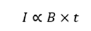
Siendo:
I = Capacidad de información
B = Ancho de banda del sistema
t = Tiempo de transmisión
I = Capacidad de información
B = Ancho de banda del sistema
t = Tiempo de transmisión
En 1948 un trabajo en el Bell System Technical Journal, relacionó la capacidad de información de un canal de comunicaciones, en bits por segundo (bps), con el ancho de banda y la relación de señal a ruido. La expresión matemática del límite de Shannon de capacidad de información es:
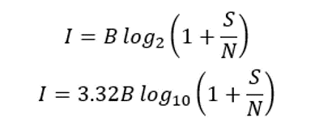
Donde:
I = Capacidad de información
B = Ancho de banda del sistema
S/N = relación de potencia de señal a ruido
I = Capacidad de información
B = Ancho de banda del sistema
S/N = relación de potencia de señal a ruido
Descarga el documento
Materia capítulo I
Bibliografía
> [1] A. M. Wechsler, Módulos de codificación y modulación OFDM de señales digitales
implementados en FPGA, Universidad Nacional de Mar del Plata, 2017. [En línea].
Disponible en: https://rinfi.fi.mdp.edu.ar/bitstream/handle/123456789/274/AMWechsler-TFGIEe-2017.pdf 1
> [2] Universidad Autónoma de Baja California, Comunicaciones Digitales, UABC, México. [En línea]. Disponible en: http://ing.ens.uabc.mx/docencia/apuntes/electronica/comunicaciones%20digitales.pdf 2
> [3] K. Rojas Monsalvo, Radiación Electromagnética, Universidad Pontificia Bolivariana, Bucaramanga, 2009. [En línea]. Disponible en: https://repository.upb.edu.co/bitstream/handle/20.500.11912/432/digital_17516.pdf
> [4] A. Lacasa, “La importancia del espectro electromagnético en las telecomunicaciones,” Blog de Ingeniería Industrial, 2024. [En línea]. Disponible en: https://blogs.udima.es/ingenieria-industrial/la-importancia-del-espectro-electromagnetico-enlas-telecomunicaciones/ 4
> [2] Universidad Autónoma de Baja California, Comunicaciones Digitales, UABC, México. [En línea]. Disponible en: http://ing.ens.uabc.mx/docencia/apuntes/electronica/comunicaciones%20digitales.pdf 2
> [3] K. Rojas Monsalvo, Radiación Electromagnética, Universidad Pontificia Bolivariana, Bucaramanga, 2009. [En línea]. Disponible en: https://repository.upb.edu.co/bitstream/handle/20.500.11912/432/digital_17516.pdf
> [4] A. Lacasa, “La importancia del espectro electromagnético en las telecomunicaciones,” Blog de Ingeniería Industrial, 2024. [En línea]. Disponible en: https://blogs.udima.es/ingenieria-industrial/la-importancia-del-espectro-electromagnetico-enlas-telecomunicaciones/ 4
INFOTMACIÒN

Integrantes:
•Karina Yucailla
• Sebastian Fiallos
• Christian Guachanboza
• Gutemberg Ramos
• Bryan Salazar
• Sebastian Fiallos
• Christian Guachanboza
• Gutemberg Ramos
• Bryan Salazar
Docente:
• Ing. juan Pablo Pallo